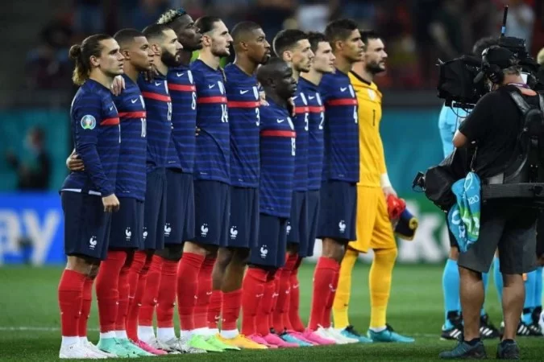

Seleção da Marrocos
Seleção de Marrocos Copas do Mundo
A seleção de Marrocos participou de sua quinta edição da Copa do Mundo de futebol em 2018.
Marrocos também esteve presente nos mundiais de 1970, 1986, 1994 e 1998. A melhor campanha
da seleção marroquina foi em 1986 quando chegou às oitavas-de-final da competição. Nas outras
edições Marrocos não passou da primeira fase do Mundial de Futebol.

Retrospecto da seleção do Marrocos em Copas do Mundo
1930 - Não disputou
1934 - Não disputou
1938 - Não disputou
1950 - Não disputou
1954 - Não disputou
1958 - Não disputou
1962 - Não se classificou
1966 - Desistiu
1970 - Eliminada na 1ª fase
1974 - Não se classificou
1978 - Não se classificou
1982 - Não se classificou
1986 - Eliminada nas oitavas-de-final
1990 - Não se classificou
1994 - Eliminada na 1ª fase
1998 - Eliminada na 1ª fase
2002 - Não se classificou
2006 - Não se classificou
2010 - Não se classificou
2014 - Não se classificou
2018 - Eliminada na 1ª fase
Técnico da Seleção de Marrocos
Vahid Halilhodzic
Goleiros
Bono
Munir
Ahmed Reda Tagnaouti
El Mehdi Benabid
zagueiros
Nayef Aguerd
Romain Saïss
Samy Mmaee
Jawad El Yamiq
Soufiane Chakla
Laterais
Adam Masina
Yahia Attiyat Allah
Achraf Hakimi
Sofiane Alakouch
Volantes
Sofyan Amrabat
Yahya Jabrane
Meias
Imrân Louza
Azzedine Ounahi
Fayçal Fajr
Selim Amallah
Ilias Chair
Pontas e Centroavantes
Ez Abde
Tarik Tissoudali
Sofiane Boufal
Youssef En-Nesyri
Munir El Haddadi
Ayoub El Kaabi
Ryan Mmaee